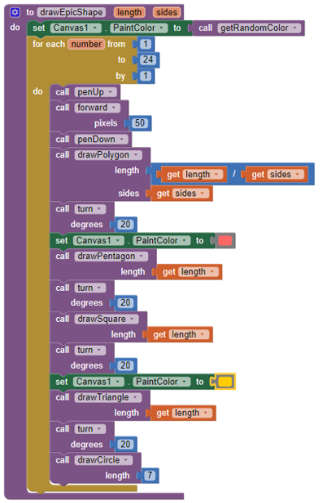
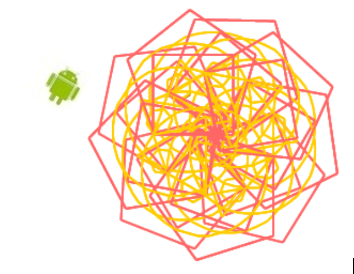
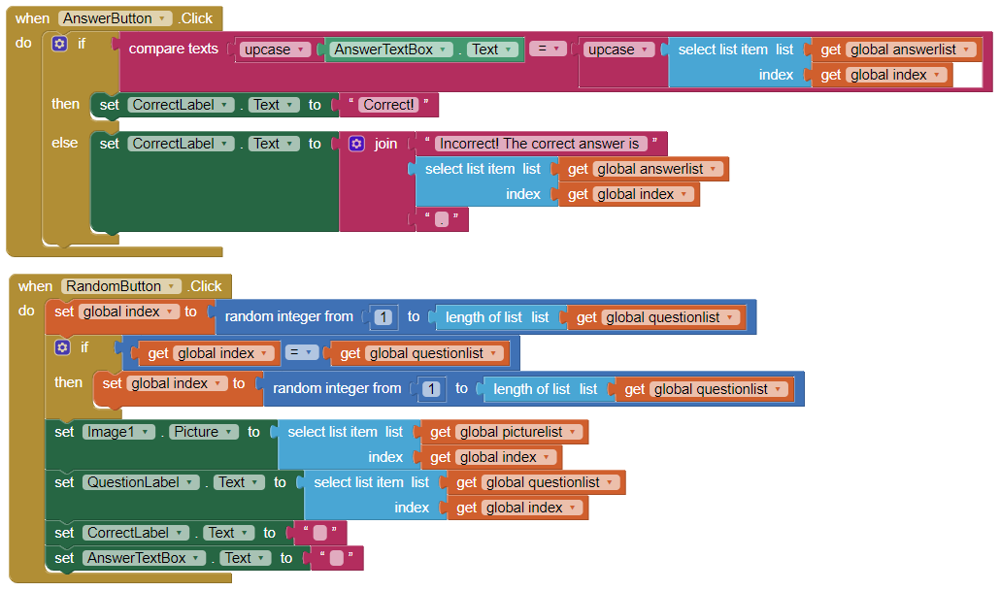
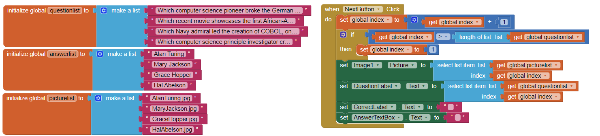
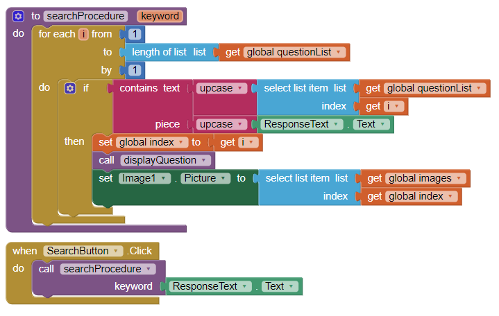
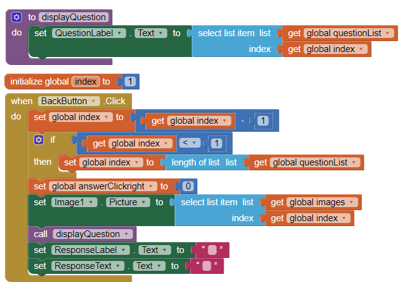
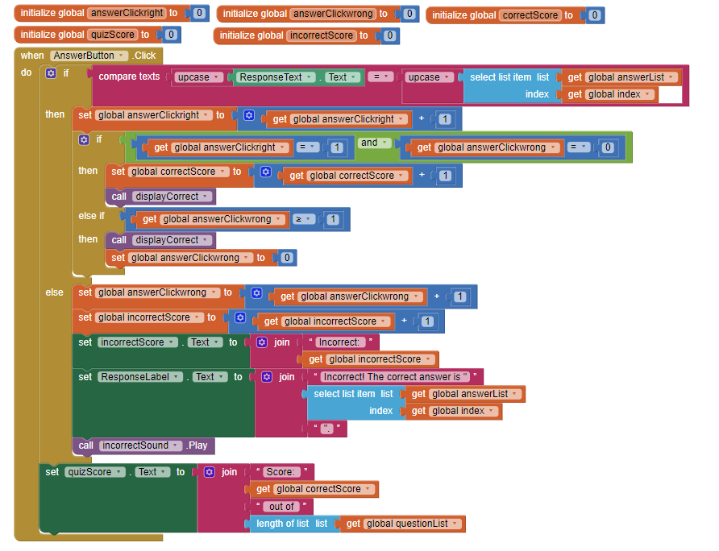

5.2 - Logo, Part 2
1. Include a screenshot of an interesting design that your Logo app made AND a screenshot of the code that created it.

2. Describe in your own words, with a specific example from Logo, how our choice of abstractions (commands) in this lesson provides us with the ability to solve problems that couldn't be solved with the abstractions (commands) used in Logo Part 1.
Our choice of abstraction from Logo pt. 2 allowed us to solve problems that the pt. 1 abstractions could not have solved, for example the use of parameters that allowed us to easily change the arguments, like length, angle, number of sides, etc, to make or draw shapes easier, as well as create even more complex shapes, like flowers and other patterns, compared to the first Logo which took specific measurements and made simple shapes like triangles and squares. Our abstractions from Logo pt. 2 also made it less complex and easy to code with.
5.3 - Search Algorithms
1. (POGIL) Define a pseudocode algorithm that will efficiently play the guessing game.
Using the two number intervals, guess the middle number within the interval.
If the number is above the middle number, guess the numbers between the number above the middle number and the max number.
Else, do the same but with the minimum number that can be guessed. Guess between the number below the middle number and the minimum number.
Repeat until the intervals of min to max numbers are small enough to take the final guess.
2. (POGIL) To guess a number between 1 and 100, what's the maximum number of guesses your algorithm would take?
To guess a number between 1 and 100, the maximum number of guesses would be 6 because it would first guess by splitting the set of numbers in half and half again and half again and so on until it has found your number.
3. (POGIL) To guess a number between 1 and 500, what's the maximum number of guesses your algorithm would take?
Because it takes around a maximum of 8 times to guess the number to find from 1 to 100, it would also be the same to guess a number between 1 and 500, there will be a maximum of 8 guesses to determine the number because we are still dividing the number into halves. Increasing the number would not change the number of guesses because it will always be halved out.
4. Suppose you have a deck of cards and you want to find the Ace of Spades. If the deck is shuffled, which is the best search algorithm to use and why?
Binary search is the best search algorithim to use, when I want to find the Ace of Spades inside a shuffled deck. I would use Binary searcn as is searches more efficiently by getting half of the deck in which the desired card is not found in, and continuing to do this process until I get the Ace of Spades. Sequential search is not desired in this case beacuse it would have to search through the whole deck to find the Ace of Spades.
5. Give an example of a search problem you encounter in everyday life. Does it use sequential, binary, or some other search algorithm?
Suppose I have to find a worksheet to use to study, it is stored in my old work folder and I have to searh using sequential search, going through every piece of paper, because I cannot skip papers as I do not know where this sheet is.
5.4 - Sorting Algorithms
1. Bubble and Merge Sort are referred to as comparison sorts because the values of the two pieces of data are compared during each step. Why are the radix and bucket sort not comparison sorts?
Bucket and radix sorting is not considered comparison sorts because they do not compare values of two pieces of data during each step, instead they group up with similar value pieces and rearange until everything is sorted, they do not compare just simply organize or bucket together.
2. Which sort do you think would be the fastest if you had to sort more than one deck of cards? Why?
I think bucket sort would be the fastest if I had to srot more than one deck of cards because I would not have to compare each card but instead group up the cards based on its value/number.
5.5 - Quiz App
1. Describe the significance of the global variable index. How is indexing used with lists in this app?
The significance of the global variable index is that organizing and selecting items from a lest lists through the variable value is possible. In indexing, the index value corresponds with the item of the list, in this app we are able to use the index to select three lists at once, the question list, answer list, and image list.
2. Describe how parallel lists were used in this app. Why was the parallel structure of the lists necessary?
Parallel lists where used in this app by connecting the three list in our app, where each value in the index has the same item from the question list, answer list, and image list. The parallel structure of the list was necessary because we need the questions to have the correct corresponding answers and images.
3. Include screenshots of your code for exercises 2 and 3 from the Enhancements section.

4. Include a screenshot of the code that added your extra question (exercise 4) AND explain why the code for the buttons worked without any changes after the addition of the extra question.

The code for buttons worked without changes after the addition of the extra question because the code specifically updates to the length of the list instead of staying at a static three value, so everytime the list gets bigger no changes in the code is needed.
5.6 - Quiz App Projects
1. Describe your solution for the second project that added a Search button. Provide a SCREENSHOT of the search button click code that uses a complex algorithm with loops and lists. Why was a loop necessary?

To allow the search button to function, when the button is clicked, the algorithm should record what is inputted in the textbox, then use that keyword and loop it across the list until the corresponding question to the keyword is found. Wihout the loop there would be no way to actually go through all of the items in the list to find the searched question.
2. Write AP text-style pseudocode for a linear search that searches through a list to find an item x. It should display found if the x is equal to an item in the list.
Repeat -> (length of list) times
if (item) -> x
then display "found"
3. Give brief descriptions of the enhancements you added to your app for the third project, a quiz topic of your own choosing. Provide SCREENSHOTS of important blocks and describe how you used them to solve certain programming problems.

My enchancement that I added to my app was a back or previous button. It does the opposite of pressing the next button. This enhancement gives greater control to the user, in which they can go to previous questions they may have had trouble with. I was able to make this back button function but inversing the next button, instead of adding to the index it subtracts one, and instead of when the index is greater than it is when the index is less than one.
4. To practice for the Create project prompt, grab a SCREENSHOT of a program code segment from your project that implements an algorithm that includes two or more algorithms within it and includes mathematical and/or logical concepts. An ideal algorithm is a procedure that you created that includes calls to other procedures that you created, where at least one of those includes math or logic (ifs or loops). Describe how each of the two algorithms within the bigger algorithm functions independently as well as in combination to form a new algorithm. Basically, answer 2c!

In this algorithm, there is an algorithm for when the question is answered correctly and incorrectly which is seperated using and If-else statement. The if segment independently focuses on the the correct score variable, while the else segment focuses on the incorrect score variable, this whole algorithm contains logical and mathematical concepts, they work seperately but when combined together they make up the scoring system of the app.
5.7 - Analyzing Algorithms
1. Present the results and the analysis you did for each of the experiments in this lesson, -- i.e., the table of running times you observed, the graphs you created, and the conclusions you reached regarding the searching algorithms and sorting algorithms. Provide a clear description, referring to your graphs and your tabulated data (which are included, or linked to), to explain how you arrived at your conclusions.
5.8 - Limits of Algorithms
1. (POGIL) A password scheme consists of a minimum password length and the different types of symbols (i.e., letters, numbers, specials) that can be used in the password. Using the Password Strength Calculator, determine the optimal scheme for withstanding a brute force attack of at least 10 years by an ordinary PC performing 100 million tests per second.
The optimal scheme for withstanding a brute force attack of at least 9 characters with the use of uppercase letters, numbers, and special characters included in the password. This scheme is able to withstand 12.8 years of attack.
2. (POGIL) According to this 2012 article, a password-cracking computer can try 350 billion passwords per second. How would you have to modify your scheme to withstand a 10-year attack by this specially designed computer?
The optimal scheme for withstanding a force attack of at least 10-year attack with 350 billion passwords per second would be a password length of 11 that has lower cases, numbers, and special characters but with no upper cases.
3. That article was written in 2012. Password cracking technology has probably gotten a lot better. Suppose the number of passwords that can be checked per second doubles every year, use the Password Strength Calculator to determine an optimal password scheme for the year 2020?
If the number of passwords checked doubled each year from 2012 to 2020 the total amount of passwords checked would be roughly 80 trillion. The optimal password scheme for the year 2020 would have the password length of 11, contain uppercase, lower case, numbers, and special characters, would result in 25.3 years to crack.
4. (POGIL) For the routes starting and ending at Trinity College, identify the nearest neighbor route and the optimal route. What does this show you about the nearest neighbor heuristic?
The nearest routes had 8.2 miles while the optimal had 7.6. For the time consumed to find a better route of only 0.6 miles, the nearest route is sometimes effective to use.
5.9 - Impacts of CS: Web Searches
1. How do web search tools make it more efficient to find information?
Web search tools, like google search or bing, make it more efficent to find information as information that people have searched for has been stored in which when someone has a similar search that have ready data to display the the user searching.
2. When you type a word or phrase into the Google search engine, what is the search algorithm that is being used? Explain in your own words the process used by Google's search engine.
When I type a word or phrase into the Google search engine, the search algorithm being used is information stored in a cache that then organizes with the keyword I inputted then displays it to me. In other words, Google search finds anything that contains the keyword I have inputted. The output in return displays things relavent to my keyword.
3. What is a captcha? How has the collective efforts of Internet users contributed to analyzing images through captchas?
Captcha or "Completely Automated Public Turing test" is a response test used in computing to determine whether or not the user is human. Captcha contributed by typing in words in response to replicate the image captcha displays, like distored letters or numbers, etc.
4. "The architecture of human knowledge has changed as a result of search." Do you agree? Explain your reasoning.
I do agree that the architecture of human knowledge has changed as a result of search, before, knowledge was bound by books and other forms of education in which it was harder to access, now information can be searched up instantly allowing humans to learn as much as they desire.
5. What are the differences between Figures 4.10 and Figure 4.11 in the book? Why are there differences even though they are both a Google search results page?
Figure 4.10 displays websites that only define the falun gong group, while 4.11 has more webstires with a negative attitude about the falun gong group. There are differences even though they are both Google search results pages, because on location is different than another, in the United States, the falun gong group is not relavent to the everyday people thus it is only defined and described, while in china, there is a different political view in which this group is not accepted, thus having a different response in the results.
6. How do you think mobile computing might have influenced web searches?
I think mobile computing or the use of mobile devies might influence web searches by creating more demand for mobile devies and increase advertising from companies who make mobile devices. People would want more mobile devies to be able to access and browse the internet where ever they are.
7. Would you retain your search history or delete it? Why?
I would retain my search history, this is because I would have access to websites that I have used in the past in which I can go back to because I might have forgotten which website it was.
8. Should a researcher place absolute trust in a search engine? Why or why not?
A researcher should not place absolute trust in a search engine because not every website is available, as search engines do not index everything found on the internet. This may affect the researcher by not given them the best information there is.
9. The authors claim "search is a new form of control over information" (p. 111) and "search is power" (p. 145). Why might it be important to talk about the social implications of searching on the Internet?
It is important to talk about the social implications of searching on the internet because not everything found on the internet is credible, people can post false information and others will end up believing it. It is important to make sure that people are aware that information on the internet needs to be credible in order to more likely be true.
10. How have search trends been used to predict information? What are the positive and negative impacts of using trends to make predictions?
Searching trends have been used to predict information by bringing the most searched subject to the front of the page or in other words, search trends determine what website or page goes to the top of the list. The postive impact of using trends to make predictions is that it will most likely determine the most relavent websites, and a negative impact of using trends to make predictions is that misinformation could be trending thus leading the inacurrate and useless information.
11. Find and read an article about web searches or algorithms. Write a 3-4 paragraph summary of the article. Include the author's name, the title of the article, the date it was published, and a link to the article.
Exclusive: How Google’s Algorithm Rules the Web by Steven Levy published in February 22, 2010 -
In this article, what is being discussed is google's plans to improve and alter its google search engine. It discusses how searching for information is widely important and that google has been at the top of the competition with most people using google search for information. How Facebook, twitter, yelp, and other companies are found searched through google. Yet these companies tries to challenge Google, through their own software. It discusses how there are very little competitors to Google's search engine describing its algorithm as mysterious and seemingly omniscient algorithm.
Although there are very little competitors, this article brings up that Bing, Microsoft’s search engine is Google’s biggest threat. This is because Bing focuses on improving Google search’s issues for their own search engine. Where google doesn’t have real-time access to information. Bing works on things in which Google search has fallen short. Although Bing has advantages over Google search, Google search still comes on top due to its reliability to human errors, like misspelling. Through data recorded for years, Google search’s algorithm is able to determine what a user is trying to search even if it is not spelt correctly.
Another reason why Google is able to reign superior in it’s search engine is because of its resources, as in computing power. Its computing power is so powerful that other competitors stand a chance. This article states that no matter what weaknesses google search has or what advantage a competitor has, Google will end up being able to incorporate that advantage to fix the weakness. As stated “it has built a machine nimble enough to absorb almost any approach that threatens it — all while returning high-quality results that its competitors can’t match”. Google search’s algorithm essentially evolves over time bringing better quality to the user.